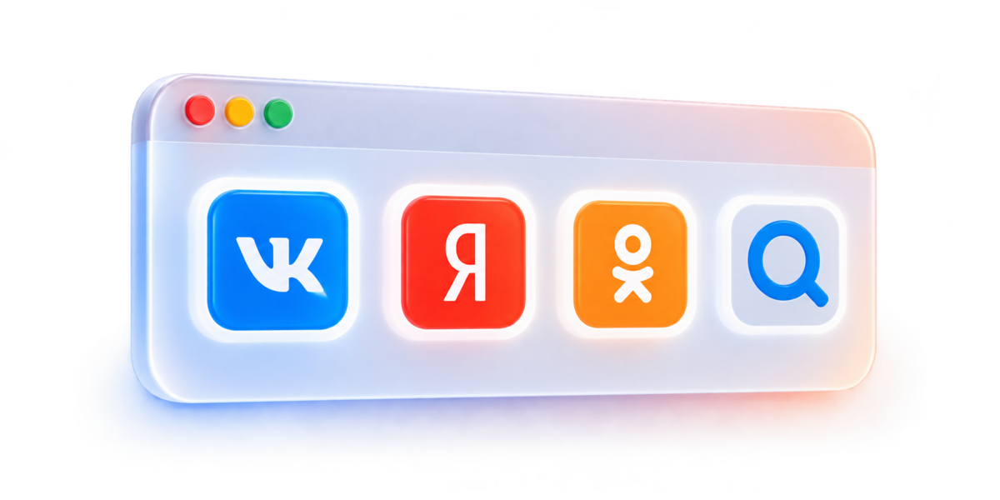
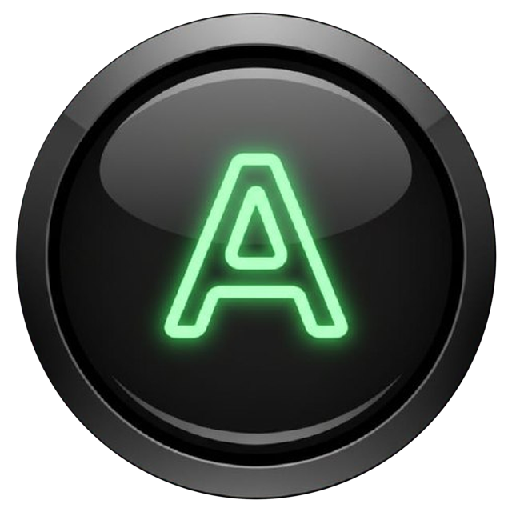

Российские сайты
и сервисы тоже работают
Не нужно постоянно включать и выключать доступ при переходе между приложениями.

КНОПКА Попробовать бесплатноДальше 300 ₽/мес
Instagram, Telegram, YouTube, ChatGPT
и другие сервисы на телефоне и компьютере.
Российские сайты и приложения продолжают работать.
 Telegram
Telegram ChatGPT
ChatGPT YouTube
YouTubeОдин доступ — и все ваши любимые сервисы открываются
стабильно, на телефоне и компьютере.

Не нужно постоянно включать и выключать доступ при переходе между приложениями.

Соцсети и ИИ-сервисы в одном удобном решении. Больше не нужно искать обходные пути.

Сервисы открываются стабильно и быстро. Вы просто пользуетесь, а не тратите время на настройки.

Рома всегда на связи. Поможет подключить и подскажет, если что-то не работает.
Выберите своё устройство — внутри короткая инструкция по установке.
Скачайте дистрибутив, установите приложение и зарегистрируйте почту. После регистрации откроется 7 дней бесплатного доступа.
Установите КнопкА через TestFlight, зарегистрируйте почту и получите 7 дней бесплатного доступа.
Скачайте установщик, завершите установку и зарегистрируйтесь в приложении. Первые 7 дней — бесплатно.
Скачайте DMG-файл, перенесите КнопкА в «Программы» и зарегистрируйте почту, чтобы получить 7 дней бесплатного доступа.
Рома — наш специалист поддержки. Он поможет с подключением, подскажет по настройкам и всегда будет рядом, если что-то не работает.
Написать РомеОбычно отвечаю
в течение нескольких минут.
Можешь написать в любое время — я помогу.
Коротко о главном. Если останутся вопросы — напишите Роме.
Скачайте и установите приложение для вашего устройства. Разрешите его запуск. После того как приложение откроется, введите вашу почту. После этого можно пользоваться бесплатно 7 дней! Если возникнут вопросы, с подключением поможет Рома.
Поддерживаются телефоны на Android, iPhone, ноутбуки и ПК на Windows, а также MacBook. Для каждой платформы предусмотрены свои шаги по установке. Если понадобится помощь — напишите Роме.
Можно скачать инструкцию или написать Роме — он поможет с подключением и настройками.
Подключилось быстро. Видео смотрю без постоянных переключений.
На телефоне и ноутбуке удобно. Российские сайты тоже открываются.
Рома помог с настройкой. Всё объяснил простыми словами.
Всё включено. Без сложных условий.
7 дней бесплатно · Дальше 300 ₽/мес